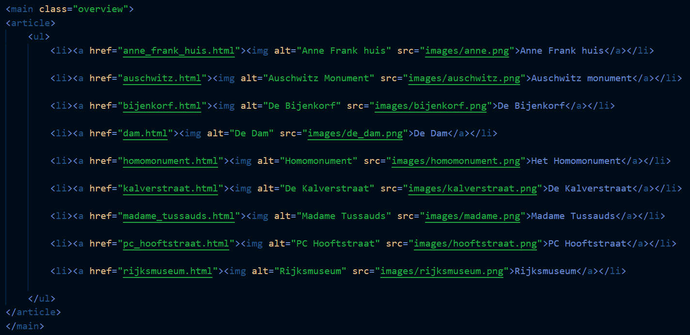

ISGA student guide
Mobile only
School project
HTML - CSS
Visual Studio Code
For an individual project, we got to create an app that would make the life of international students in Amsterdam easier. I made a working prototype, using HTML and CSS. This was one of the first projects where I used these languages, so this was a great learning opportunity and I enjoyed it a lot. I decided to make an app students can use to go sightseeing. They can select different locations and create a route with them.
For this project, we already got a visual style to make the app in. The project was based on an international student guide, and our first step was to skim through the guide and do some research. I found some interesting topics and page with the most important elements used in the visual style used by the guide. After all the research was done, it was time for the fun part. I thought about what app I was going to make and what it was going to look like. I made a flowchart, so I would have an idea of what to make my app look like.
When this was done, it was time to start writing the HTML and CSS. My knowledge of these languages were pretty limited back then, so it was quite the struggle. Even though I knew very little, I managed to make something that I was really proud of.
- 
When I look back on my code, I notice things I would do differently now. I’m glad I do, because it means I’ve gotten more knowledge and have been growing as an aspiring Front End developer.
Results